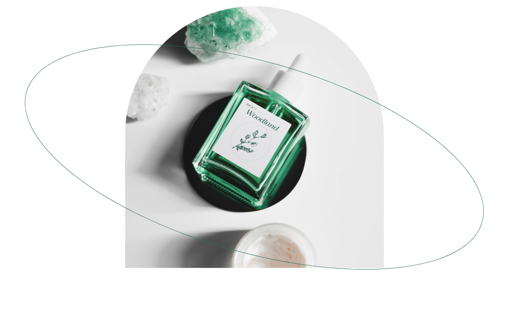
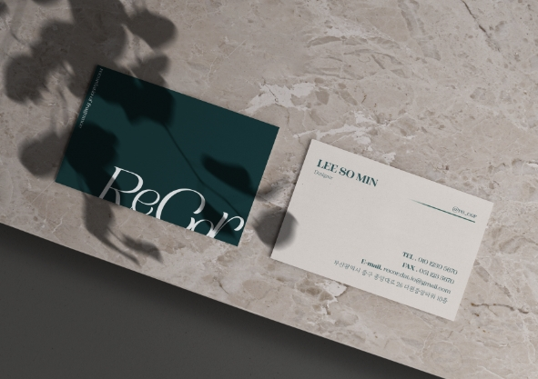
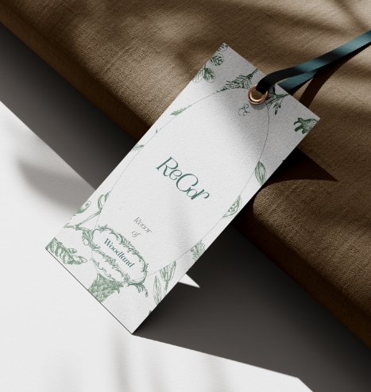
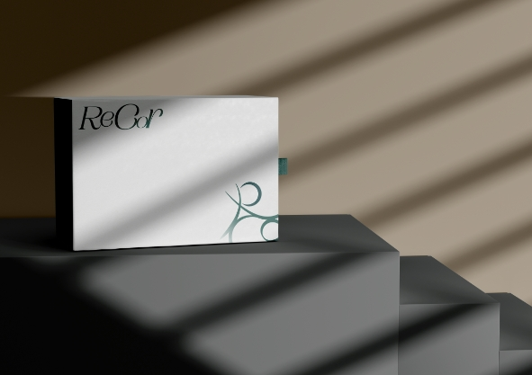

"ReCor Your Life"
리코르는 향기로 추억들을 보관하는 브랜드입니다.
특별한 순간, 특별한 공간 그리고 특별하지 않은 일상들이 리코르의 향기로
특별하게 record되길 바랍니다.
리코르는 향기로 추억들을 보관하는 브랜드입니다.
특별한 순간, 특별한 공간 그리고 특별하지 않은 일상들이 리코르의 향기로
특별하게 record되길 바랍니다.
Recordaio
생각나는 일, 기억; 회상, 추억; 기념
ReCor는 향기로 추억을 간직할 수 있도록
일상속에서 함께하는 향을 제작하는 브랜드입니다.
Campaign Serif 서체에서 r의 폭을 늘리고 자간을
좁혔으며, 높낮이를 수정해 심볼마크와의 조화를
고려해 디자인하였습니다
브랜드 명에서 가져온 타이포를 향수병 형태로 배치하여
브랜드의 아이덴디티를 상징화 하였습니다.
또한 배치한 타이포를 공기중에 떠다니는 향기를
시각화하여 ReCor의 향을 표현하였습니다.

후각은 오감 중 가장 장기적으로 기억을 가질 수 있는 감각입니다.
‘추억’과 ‘회상’을 ‘다시’뚜렷하게 기억할 수 있는 향기를
일상생활에서 함께하여 영구적으로 ‘간직’할 수 있도록 하고자 하는 브랜드의 철학을 담아
아이덴티티를 구축하게 되었습니다.
라틴어로 ‘추억’,’회상'이라는 뜻의 ‘Recordatio’에서
따온 브랜드 네임은 자사의 제품의 향을 맡고 추억을
떠올려 Re(다시) Cor(심장)을 뛰게 한다는
의미를 담고 있습니다.


ReCor의 시그니처 컬러인 dawn green 컬러는 한여름의 새벽에 이슬이 맺힌 잔디 위를 걷는 시간을 표현하는 색 입니다.
서늘하지만 따뜻한, 몽롱하지만 어딘가 그립고 편안한 그 순간을 고객들에게 느낄 수 있게, 또 기억할 수 있기를 바라는
브랜드의 지향점을 담았습니다.


